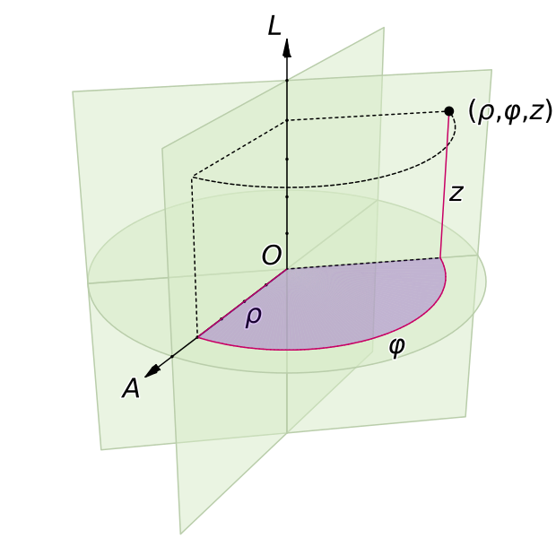

FFM234, Klassisk fysik och vektorfält - Föreläsningsanteckningar
Sep 3, 2019
2. Kroklinjiga koordinater
Allmänt behöver vi tre parametrar \( u_1, u_2, u_3 \) för att beskriva en godtycklig punkt i rummet. Jämför med generaliserade koordinater i analytisk mekanik. Vi kan då skriva ortsvektorn som \( \vec{r}(u_1, u_2, u_3) \).
Koordinatyta
för koordinat \( i \): alla lösningar till \( u_i = \mathrm{konstant} \).Koordinatkurva
den kurva som fås om en koordinat tillåts variera och de andra hålls konstanta.Om vi då håller en av parametrarna, säg \( u_1 \), fix och låter \( u_2 \) och \( u_3 \) variera, så får vi en två-dimensionell yta, vilken vi kallar \( u_1 \)-ytan. På samma sätt kan vi då definiera ytor för de andra koordinaterna. Två koordinatytor, till exempel de för koordinaterna \( u_2 \) och \( u_3 \), skär varandra längs en en-dimensionell kurva. Längs denna kurva kommer då bara koordinaten \( u_1 \) att variera, så denna kurva är en koordinatkurva för \( u_1 \).
Exempel: cylindriska koordinater
I de cylindriska koordinaterna \( \rho, \phi, z \) kan vi skriva ortsvektorn som \( \vec{r} = \rho\cos \phi \hat{x} + \rho\sin \phi \hat{y} + z \hat{z} \).

Koordinatytorna för \( \rho, \phi, z \) är då en cylinder med \( z \)-axeln som symmetriaxel och med radien \( \rho \), ett plan som utgår från \( z \)-axeln och bildar en vinkel \( \phi \) med \( x \)-axeln, samt ett plan parallellt med \( xy \)-planet och med \( z \)-koordinaten \( z \).

Koordinatlinjerna för \( \rho, \phi, z \) blir då en stråle som utgår från \( z \)-axeln och bildar vinkeln \( \phi \) med \( x \)-axeln, en cirkel med radien \( \rho \) och en linje parallell med \( z \)-axeln.
Enhetsvektorer
Om vi nu studerar en liten förskjutning av ortsvektorn, \( \mbox{d}\vec{r} \), så kan vi i och med att ortsvektorn är en funktion av \( u_1, u_2, u_3 \) skriva denna som $$ \begin{equation} \mbox{d}\vec{r} = \frac{\partial \vec{r}}{\partial u_1} \mbox{d}u_1 + \frac{\partial \vec{r}}{\partial u_2} \mbox{d}u_2 + \frac{\partial \vec{r}}{\partial u_3} \mbox{d}u_3. \label{eq:forskjutningsvektor} \end{equation} $$Tänk nu på att den partiella derivatan \( \partial \vec{r}/\partial u_1 \) är definierad som derivatan då vi håller \( u_2 \) och \( u_3 \) fixa. Därför måste \( \partial \vec{r}/\partial u_1 \) vara en tangentvektor till koordinatkurvan för \( u_1 \). Vi kan då definiera en enhetsvektor för \( u_1 \) som $$ \begin{equation} \hat{e}_1 = \frac{1}{h_1} \frac{\partial \vec{r}}{\partial u_1}, \label{_auto1} \end{equation} $$ där $$ \begin{equation} h_1 = \left|\frac{\partial \vec{r}}{\partial u_1}\right| \label{_auto2} \end{equation} $$ kallas för skalfaktorn. På samma sätt kan vi bestämma skalfaktorer och enhetsvektorer till \( u_2 \) och \( u_3 \). Förskjutningsvektorn \( \mbox{d}\vec{r} \) kan vi nu skriva som $$ \begin{equation} \mbox{d}\vec{r} = h_1\hat{e}_1 \mbox{d}u_1 + h_2\hat{e}_2\mbox{d}u_2 + h_3\hat{e}_3\mbox{d}u_3. \label{eq:forskjutningsvektor_skalfaktor} \end{equation} $$
Alternativ definition
Ett alternativ till att använda de normerade tangentvektorerna som enhetsvektorer är att använda normalvektorerna till koordinatytorna. Betrakta t.ex. $$ \begin{equation} u_1 = u_1(x,y,z) = \mathrm{konstant}. \label{_auto3} \end{equation} $$ Detta motsvarar en nivåyta till ett skalärfält. Normalvektorn ges alltså av \( \vnabla u_1 \). Det gäller alltid att $$ \begin{equation} \vnabla u_i \cdot \frac{\partial \vec{r}}{\partial u_j} = \delta_{ij}. \label{_auto4} \end{equation} $$ När vi inskränker oss till ortogonala system gäller dessutom att \( \vnabla u_i \parallel \frac{\partial \vec{r}}{\partial u_i} \). Notera dock att dessa vektorer i allmänhet kan ha olika längd. Faktum är att följande samband gäller för ortogonala system $$ \begin{equation} \hat{e}_i = \frac{1}{h_i} \frac{\partial \vec{r}}{\partial u_i} = h_i \vnabla u_i. \label{_auto5} \end{equation} $$
Exempel: Enhetsvektorer för cylindriska koordinater
I cylindriska koordinater är \( \vec{r} = (\rho\cos \phi, \rho\sin \phi, z) \). Vi kan då beräkna $$ \begin{align} \frac{\partial \vec{r}}{\partial \rho} &= \left(\cos \phi, \sin \phi, 0\right), \label{_auto6}\\ \frac{\partial \vec{r}}{\partial \phi} &= \left(-\rho \sin\phi, \rho \cos \phi, 0\right), \label{_auto7}\\ \frac{\partial \vec{r}}{\partial z} &= \left(0,0,1\right). \label{_auto8} \end{align} $$ Skalfaktorerna blir då $$ \begin{align} h_\rho &= \left(\cos^2\phi + \sin^2\phi\right)^{1/2} = 1, \label{_auto9}\\ h_\phi &= \left(\rho^2 \cos^2\phi + \rho^2 \sin^2\phi\right)^{1/2} = \rho, \label{_auto10}\\ h_z &= 1. \label{_auto11} \end{align} $$ Enhetsvektorerna blir $$ \begin{align} \hat{\rho} &= \left(\cos\phi, \sin\phi,0\right), \label{_auto12}\\ \hat{\phi} &= \left(-\sin\phi, \cos\phi,0\right), \label{_auto13}\\ \hat{z} &= \left(0,0,1\right). \label{_auto14} \end{align} $$ Förskjutningsvektorn kan då skrivas som $$ \begin{equation} \mbox{d}\vec{r} = \hat{\rho} \mbox{d}\rho + \rho \hat{\phi} \mbox{d} \phi + \hat{z} \mbox{d}z. \label{_auto15} \end{equation} $$
I fortsättningen skall vi begränsa oss till koordinatsystem med ortogonala enhetsvektorer, dvs $$ \begin{equation} \hat{e}_i \cdot \hat{e}_j = \delta_{ij} = \left\{ \begin{array}{ll} 1 & \,\mbox{om}\,\, i = j \\ 0 & \,\mbox{annars}\\ \end{array}\right. \label{_auto16} \end{equation} $$ där vi passat på att introducera Kroneckers delta, \( \delta_{ij} \).
Vi skall också anta att enhetsvektorerna bildar ett högersystem $$ \begin{equation} \hat{e}_1 \times \hat{e}_2 = \hat{e}_3 \label{_auto17} \end{equation} $$
Visa att enhetsvektorerna i de cylindriska koordinaterna uppfyller dessa villkor.
Vi kan nu härleda några användbara samband som båglängden längs en kurva $$ \begin{equation} \mbox{d}s^2 = \mbox{d}\vec{r}\cdot \mbox{d}\vec{r} = h_1^2\mbox{d}u_1^2 + h_2^2 \mbox{d}u_2^2 + h_3^2 \mbox{d}u_3^2. \label{_auto18} \end{equation} $$ Betrakta ovanstående båglängd för fallet då \( du_2=du_3=0 \). Det står då klart att vi kan tolka \( h_1 du_1 \) som båglängden \( ds_1 \), dvs som en infinitesimal förflyttning i \( u_1 \)-riktningen. Notera därför att \( h_i du_i \) alltid måste ha enheten längd.
Ett ytelement \( \mbox{d}\vec{S}_1 \) på koordinatytan \( u_1 \) är en rektangel som genereras av \( \mbox{d}u_2 \) och \( \mbox{d}u_3 \). Rektangelns sidor har då längderna \( h_2\mbox{d}u_2 \) och \( h_3\mbox{d}u_3 \). Ytelementet blir $$ \begin{equation} \mbox{d}\vec{S}_1 = \hat{e}_1 h_2 h_3 \mbox{d}u_2 \mbox{d}u_3, \label{_auto19} \end{equation} $$ och på samma sätt kan vi beräkna ytelementen på koordinatytorna för \( u_2 \) och \( u_3 \).
Analogt kan vi beräkna volymelementet som genereras av \( \mbox{d}u_1 \), \( \mbox{d}u_2 \) och \( \mbox{d}u_3 \), vilket blir $$ \begin{equation} \mbox{d}V = h_1 h_2 h_3 \mbox{d}u_1 \mbox{d}u_2 \mbox{d}u_3. \label{_auto20} \end{equation} $$
Exempel: båg- yt- och volymselement i cylindriska koordinater
Bågelementet i cylindriska koordinater blir $$ \begin{equation} \mbox{d}s^2 = \mbox{d}\rho^2 + \rho^2\mbox{d}\theta^2 + \mbox{d}z^2. \label{_auto21} \end{equation} $$ Ett ytelement på \( \rho \)-ytan skrives $$ \begin{equation} \mbox{d}\vec{S}_\rho = \hat{e}_\rho \rho \mbox{d}\phi\mbox{d}z, \label{_auto22} \end{equation} $$ på \( \phi \)-ytan $$ \begin{equation} \mbox{d}\vec{S}_\phi = \hat{e}_\phi \mbox{d}\rho\mbox{z} \label{_auto23} \end{equation} $$ och på \( z \)-ytan $$ \begin{equation} \mbox{d}\vec{S}_z = \hat{e}_z \rho\mbox{d}\rho \mbox{d}\phi. \label{_auto24} \end{equation} $$ Volymelementet kan vi skriva som $$ \begin{equation} \mbox{d}V = \rho\mbox{d}\rho \mbox{d}\phi\mbox{d}z. \label{_auto25} \end{equation} $$
Vektoroperatorer i kroklinjiga koordinater
Gradient
Betrakta ett skalärt fält \( \phi \). Om vi förflyttar oss en sträcka \( \mbox{d}\vec{r} \) så förändras \( \phi \) $$ \begin{equation} \mbox{d}\phi = \vnabla \phi \cdot \mbox{d}\vec{r}. \label{_auto26} \end{equation} $$ Samtidigt, om vi skriver \( \phi \) som en funktion av \( u_1, u_2 \) och \( u_3 \) får vi $$ \begin{align} \mbox{d}\phi &= \frac{\partial \phi}{\partial u_1}\mbox{d}u_1 + \frac{\partial \phi}{\partial u_2}\mbox{d}u_2 + \frac{\partial \phi}{\partial u_3}\mbox{d}u_3 = \frac{1}{h_1} \frac{\partial \phi}{\partial u_1} h_1 \mbox{d}u_1 + \frac{1}{h_2} \frac{\partial \phi}{\partial u_2} h_2 \mbox{d}u_2 + \frac{1}{h_3} \frac{\partial \phi}{\partial u_3} h_3 \mbox{d}u_3 \nonumber \\ &= \left(\frac{1}{h_1} \frac{\partial \phi}{\partial u_1} \hat{e}_1 + \frac{1}{h_2} \frac{\partial \phi}{\partial u_2} \hat{e}_2 + \frac{1}{h_3} \frac{\partial \phi}{\partial u_3} \hat{e}_3\right) \cdot \mbox{d}\vec{r} \label{_auto27} \end{align} $$ Förflyttningen \( \mbox{d}\vec{r} \) (ovan) kan vi i de nya koordinaterna skriva som [se ekv. \eqref{eq:forskjutningsvektor_skalfaktor}] $$ \begin{equation} \mbox{d}\vec{r} = h_1 \hat{e}_1 \mbox{d}u_1 + h_2 \hat{e}_2 \mbox{d}u_2 + h_3 \hat{e}_3 \mbox{d}u_3. \label{_auto28} \end{equation} $$ Då kan vi identifiera uttrycket inom parentesen som gradienten i de nya koordinaterna \( u_1, u_2, u_3 \) $$ \begin{equation} \vnabla \phi = \frac{1}{h_1} \frac{\partial \phi}{\partial u_1} \hat{e}_1 + \frac{1}{h_2} \frac{\partial \phi}{\partial u_2} \hat{e}_2 + \frac{1}{h_3} \frac{\partial \phi}{\partial u_3} \hat{e}_3. \label{_auto29} \end{equation} $$
Gradient i cylindriska koordinater:
I cylindriska koordinater blir gradienten $$ \begin{equation} \vnabla f = \frac{\partial f}{\partial \rho} \hat{\rho} + \frac{1}{\rho} \frac{\partial f}{\partial \phi} \hat{\phi} + \frac{\partial f}{\partial z} \hat{z}. \label{_auto30} \end{equation} $$
Exempel: skalärfält och dess gradient i olika koordinatsystem
Ett skalärfält är givet i Cartesiska koordinater $$ \begin{equation} \beta = x^2 + y^2. \label{_auto31} \end{equation} $$ Motsvarande skalärfält i plana polärkoordinater blir $$ \begin{equation} \beta = r^2\cos^2\theta + r^2 \sin^2\theta = r^2. \label{_auto32} \end{equation} $$ Gradienten i Cartesiska koordinater blir $$ \begin{equation} \vnabla \beta = \hat{x} \partial_x \beta + \hat{y} \partial_y \beta = 2 (x \hat{x} + y \hat{y}). \label{_auto33} \end{equation} $$ Medan i plana polärkoordinater blir den $$ \begin{equation} \vnabla \beta = \hat{e}_r \partial_r + \hat{e}_\theta \frac{1}{r} \partial_\theta \beta = 2 r \hat{e}_r. \label{_auto34} \end{equation} $$ Eftersom \( x \hat{x} + y \hat{y} = r \hat{e}_r \) är det uppenbart att detta är samma vektor!
Exempel: Tentauppgift 2010-08-26: 1b
För vilka värden på \( \alpha,\beta,\gamma \) har det tvådimensionella koordinatsystemet med koordinater \( \xi \) och \( \eta \), givna av $$ \begin{align} \xi &= x^2 - y^2 \label{_auto35}\\ \eta &= \alpha x^2 + \beta x y + \gamma y^2 \label{_auto36} \end{align} $$ ortogonala basvektorer?
Lösning
Vi kan konstruera basvektorer på två sätt:- \( \hat{e}_i \propto \frac{\partial \vec{r}}{\partial u_i} \)
- \( \hat{e}_i \propto \vnabla u_i \)
Det andra sättet kräver istället \( \frac{\partial \xi}{\partial x} \) och \( \frac{\partial \xi}{\partial y} \) (samt motsvarande för \( \eta \)) och detta blir enkelt med de givna koordinattransformationerna. Vi får $$ \begin{align} \vnabla \xi &= 2x \hat{x} - 2y \hat{y} \label{_auto37}\\ \vnabla \eta &= (2 \alpha x + \beta y)\hat{x} + (\beta x + 2 \gamma y) \hat{y} \label{_auto38} \end{align} $$ För att koordinatsystemet skall vara ortogonalt behöver vi $$ \begin{equation} \hat{e}_\xi \cdot \hat{e}_\eta = 0 \qquad \Rightarrow \qquad \vnabla \xi \cdot \vnabla \eta=0. \label{_auto39} \end{equation} $$ Från uttrycken för dessa gradienter ovan får vi $$ \begin{equation} \vnabla \xi \cdot \vnabla \eta = 2x (2 \alpha x + \beta y) - 2 y (\beta x + 2 \gamma y) = 4 \alpha x^2 - 4 \gamma y^2. \label{_auto40} \end{equation} $$ För att få \( \vnabla \xi \cdot \vnabla \eta=0 \) måste vi ha \( \alpha = \gamma = 0 \), medan \( \beta \) är godtyckligt.
import numpy as np
import pylab as p
# Make an x,y grid
grid = np.linspace(-4,4,100)
x, y = np.meshgrid(grid,grid)
# and the 2D fields
xi = x**2 - y**2
eta = x * y
p.figure(figsize=(6,6))
CS = p.contour(x,y,xi,5,colors='k')
p.clabel(CS, inline=1, fontsize=10)
p.text(0.5,1.3,r'$\xi$-yta',color='k',rotation=45)
CS = p.contour(x,y,eta,5,colors='r')
p.clabel(CS, inline=1, fontsize=10)
p.text(1,0.05,r'$\eta$-yta',color='r')
p.xlabel(r'$x$')
p.ylabel(r'$y$')

Exempel: Fältlinjer i kroklinjiga koordinater
Låt oss konstruera och rita fältlinjerna till en så kallad virveltråd $$ \begin{equation} \vec F = \frac{J}{2\pi\rho} \hat{\varphi}, \label{_auto41} \end{equation} $$ som alltså är uttryckt i cylindriska koordinater. Notera att detta fält är singulärt längs hela \( z \)-axeln vid \( \rho=0 \), men vi kommer här enbart att betrakta \( \rho > 0 \).
Lösning
Vi kan rita fältlinjerna på två sätt:- Det första alternativet är förstås att finna ett explicit uttryck för fältlinjerna genom att formulera och lösa differentialekvationerna. Sedan kan vi definiera dessa kurvor som en funktion i Matlab (eller Python) och rita upp dem explicit för några olika startpunkter.
- Det andra alternativt är att utnyttja funktionen 'streamline' i Matlab ('streamplot i Python) och mata in vektorfältet på ett rutnät av olika koordinatpunkter. Notera dock att detta alternativ bygger på att vi transformerar till ett Cartesiskt koordinatsystem.
Vi kan teckna ekvationen för fältlinjerna i Cartesiska koordinater som sambandet \( x^2+y^2 = \rho_0^2 \) och rita upp dessa för några olika val av \( \rho_0 \). I figuren nedan är fältlinjerna ritade som funktioner \( y = \pm \sqrt{\rho_0^2 - x^2} \) för \( \rho_0 = 1,1.5,2,2.5,3 \).

Nu tittar vi på det andra alternativet och använder tillgänglig funktionalitet i Matlab (eller Python). Här krävs dock att vektorfältets Cartesiska komponenter räknas ut. Från transformationen mellan cylindriska och Cartesiska koordinater ser vi direkt att $$ \begin{equation*} \frac{2\pi}{J} \vec{F} = \frac{1}{\rho} \hat\varphi = \frac{1}{\rho} \left( -\sin\varphi \hat{x} + \cos\varphi \hat y \right). \end{equation*} $$ Koordinaterna är relaterade enligt \( \rho^2 = x^2+y^2 \) och \( \cos\varphi = x/\rho \), \( \sin\varphi = y/\rho \), vilket ger $$ \begin{equation*} \frac{2\pi}{J} \vec{F} = \frac{1}{x^2+y^2} \left( -y \hat{x} + x \hat y \right). \end{equation*} $$
I både Matlab och Python kan vi skapa ett rutnät av \( x,y \)-koordinater och tillhörande \( F_x,F_y \) komponenter som vi sedan ritar med 'streamline' ('streamplot' i Python). Se nedan för kod och figur med Matlab:
% Make an x,y grid
[X,Y] = ndgrid(linspace(-2.5,2.5,100),linspace(-2.5,2.5,100));
R=sqrt(X.^2+Y.^2);
% Plot streamlines for corresponding vector field
v_x = - Y ./ R.^2; % Note that -Y/R = -sin(phi)
v_y = X ./ R.^2; % Note that X/R = cos(phi)
% In Matlab we have to provide start points for streamlines.
start1_y=-2.0:0.5:-0.5;
start_y=[start1_y, -start1_y];
start_x=[zeros(size(start_y))];
% Fine tuning might be needed to get a nice set of streamlines.
strm=streamline(X', Y', v_x', v_y', start_x, start_y,[0.01]);
set(strm,'LineWidth',2,'Color','k')
hold on
% Matlab streamlines have no arrows. Combine with quiver.
% Use fewer grid points to avoid too many arrows in the plot.
[Xc,Yc] = ndgrid(linspace(-3,3,10),linspace(-3,3,10));
Rc=sqrt(Xc.^2+Yc.^2);
v_xc = - Yc ./ Rc.^2; % Note that -Y/R = -sin(phi)
v_yc = Xc ./ Rc.^2; % Note that X/R = cos(phi)
qvr=quiver(Xc', Yc', v_xc', v_yc','Color','k');
xlabel('x')
ylabel('y')
xlim([-2.5,2.5])
ylim([-2.5,2.5])

Och samma exempel med Python:
import sys
import numpy as np
import matplotlib.pyplot as plt
w = 3
Y, X = np.mgrid[-w:w:100j, -w:w:100j]
R = np.sqrt(X**2+Y**2)
U = -Y / R**2 # Note that -Y/R = -sin(phi)
V = X / R**2 # Note that X/R = cos(phi)
fig = plt.figure()
ax = fig.add_subplot(111)
strm = ax.streamplot(X, Y, U, V, linewidth=2)
ax.set_title(r'Streamplot, vortex field ' +\
r'$\vec{F} = \frac{J}{2\pi\rho}\hat\varphi$')
ax.set_xlabel('$x$')
ax.set_ylabel('$y$')
ax.set_aspect('equal')
plt.savefig('streamlines-vortex.png')